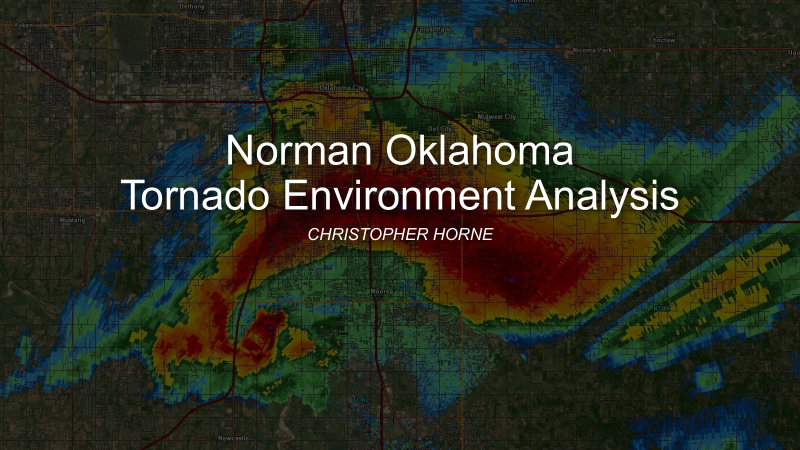

METEOROLOGY / SOUNDING ANALYSIS
Norman tornado environments.
Comparing instability, wind profiles, and composite parameters across seven selected tornado cases in the Norman / Oklahoma City region.
THE QUESTION
What I explored.
How did instability, inhibition, and wind profiles differ across selected tornado events and storm modes?
I compared atmospheric ingredients across selected central Oklahoma tornado events using OUN soundings from the University of Wyoming archive and ERA5 reanalysis where the observed sounding was less representative of the event location or timing.
Explore the presentation.
13 slidesLoading slide previews…

Student case-study presentation. Original slide wording, figures, and references are preserved in the PDF.
WORKFLOW
From data
to interpretation.
- Choose comparison cases. Examine seven events spanning 1999–2023, including historical F-scale and later EF-scale cases and a QLCS event.
- Evaluate thermodynamics. Compare surface-based CAPE and CIN, lifting-condensation levels, and midlevel lapse rates using vertical atmospheric profiles.
- Evaluate wind profiles. Compare layer wind shear, storm-relative helicity, and Bunkers storm-motion estimates; use hodographs to examine wind-profile structure.
- Present the comparisons. Use charts, relative-scale comparisons, hodographs, and Skew-T diagrams to communicate the differences among the selected environments.
PROJECT FINDINGS
What the work
shows.
The presentation emphasizes that the selected events did not follow a simple one-parameter relationship with tornado rating. Its comparisons explore the overlap of instability and wind-profile ingredients, including the contrasting environments of the May 20, 2013 case and the February 26, 2023 QLCS case.
CONTEXT & LIMITATIONS
Reading the
results carefully.
- Nearby soundings and reanalysis may not represent the exact location and time of a tornado.
- CAPE, CIN, and storm-relative helicity depend on profile quality, parcel assumptions, storm motion, and layer calculations.
- This is a comparison of seven selected cases, not a validated tornado-intensity prediction model.
LET’S TALK ABOUT THE WORK